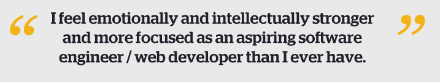

CHALK TALK
Published by Ana Sauceda
March 1, 2017
Learners Guild creates space and provides tools for the immense amount of unlearning most of us must go through and struggle with while going through this life-changing program. I know people have pushed back and they may not, at first, see the importance of focusing on the culture we are building here. But it is so important. The adjustment to this radical form of learning is not easy. So many people of color, women, and others who are minorities in this field have been fighting battles with themselves for years, some of us have come accustomed to fighting, or to mistrust ourselves and others, or to silence. Clearing that out of the way so I could focus on my learning, and be really honest with myself about what I need to do to accomplish my goals was so important. Doing that work in home-group through interactive activities and discussions helped me so much, as well as the 1 on 1 support I have gotten from the Learning Facilitators. I am so grateful for the benchmarking and goal setting, I am going to continue to improve week after week. I have arranged my life for the next few months so I can push myself even harder to level up and make the most of this home stretch.
After close to 8 months in this program, I can say more than ever I feel emotionally and intellectually stronger and more focused as an aspiring software engineer/ web developer than I ever have. While I may be currently making up for some gaps in my knowledge about programming I have a clear path of what I need to do to reach my goals, I trust all of my mentors here at Learners Guild immensely. Every time I feel the past toxic, and inhibiting experiences with learning creeping its way into my psyche I now hav a massive set of tools and the support I need to quickly re-focus myself.
The competition here at Learner's Guild is unlike any other learning institution that I have been a part of. It is healthy and effective and it is getting better and better at pushing us to keep fighting to reach our goals. It is getting better and better at helping us individualize our paths to optimize our own learning. It just takes a long time to decouple this healthy, and radical form of competition from the toxic competition we have all experienced in the past.

general inquiries: info@learnersguild.org
applicants: enrollment@learnersguild.org
partnerships: info@learnersguild.org
492 Ninth Street (Garden Level)
Oakland, CA 94607
@LearnersGuildUS